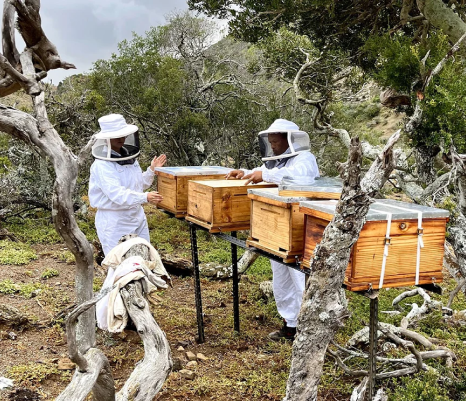

Esta información corresponde a la regulación de España
En primer lugar, la gran duda de los apicultores al iniciar sus actividades es siempre la misma y es cómo y ¿Dónde ubicar su colmenar para ser ecológico? En España está claramente reglamentado, así que si vas a poner en marcha tu apiario, es mejor que conozcas todas las normas. En segundo lugar, la situación del colmenar ecológico debe elegirse de forma que, en un radio de 3 kilómetros, las fuentes de néctar,polen y agua son fundamentalmente cultivos producidos ecológicamente, es decir, libres de productos químicos. Igualmente, debemos privilegiar la vegetación silvestre o endémica y cultivos tratados mediante métodos con un bajo impacto medioambiental. Así como equivalentes a los descritos en el artículo 36 del Reglamento (CE) no 1698/2005 del Consejo (12) o en el artículo 22 del Reglamento (CE) no 1257/1999 del Consejo (13) que no afecten a la calificación ecológica de la producción apícola.
En segundo lugar, la situación del colmenar ecológico debe elegirse de forma que, en un radio de 3 kilómetros, las fuentes de néctar, polen y agua son fundamentalmente cultivos producidos ecológicamente, es decir, libres de productos químicos. Igualmente, debemos privilegiar la vegetación silvestre o endémica y cultivos tratados mediante métodos con un bajo impacto medioambiental. Así como equivalentes a los descritos en el artículo 36 del Reglamento (CE) no 1698/2005 del Consejo (12) o en el artículo 22 del Reglamento (CE) no 1257/1999 del Consejo (13) que no afecten a la calificación ecológica de la producción apícola.

Los cultivos considerados con bajo impacto ambiental según el artículo 36 son acogidos a las subvenciones o ayudas. Zonas de montaña o zonas desfavorecidas; red natura 2000, a otras ayudas agroambientales. Así mismo, ayudas a las inversiones no productivas, a tierras forestales o de primera forestación de tierras agrícolas y no agrícolas.
Formas de utilización de las tierras de interés agrario que sean compatibles con la protección y mejora del medio ambiente, del paisaje y de sus características, de los recursos naturales, del suelo y de la diversidad genética.
Si deseas leer más información puedes visitar este sitio